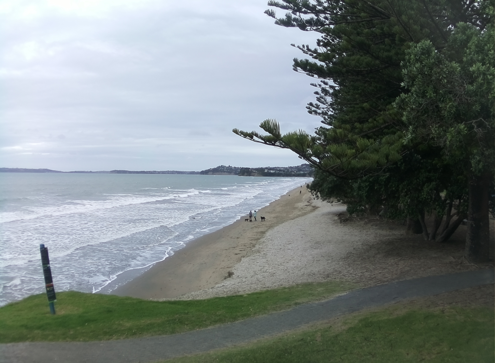
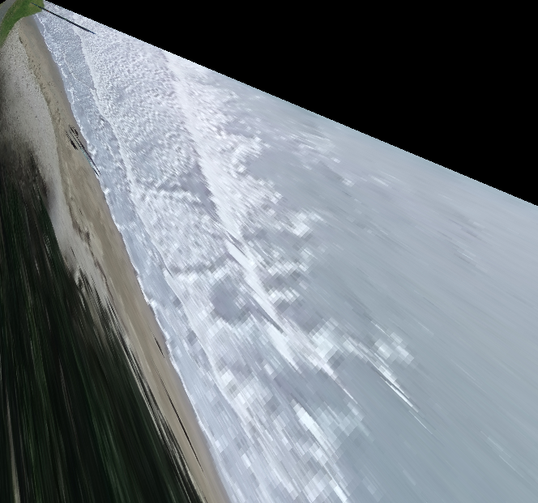
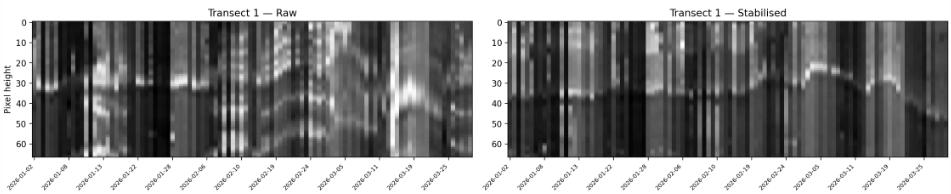

Coastal Camera Image Processing
Background
Auckland Council operates nine Obscape time-lapse cameras along the east coast from Te Arai to Waiheke Island, capturing hourly imagery transmitted via GSM. The existing image-processing ecosystem (MATLAB-based Argus tools and the CoastSnap citizen-science platform) presented barriers to operational use: licensing costs, complexity, and unsuitability for fixed-camera networks.
This project delivers standalone Python tools that exploit the fixed geometry of the Obscape installations. Because the cameras do not move between frames, the intrinsic and extrinsic calibration can be solved once from surveyed ground control points and applied to all subsequent imagery without re-estimation.
The Pinhole Camera Model
The projection of a 3D world point $\mathbf{X} = [X, Y, Z, 1]^T$ onto a 2D image point $\mathbf{x} = [u, v, 1]^T$ is modelled by the $3 \times 4$ projection matrix:
$$\mathbf{x} = P\,\mathbf{X} = K\,[R \mid \mathbf{t}]\,\mathbf{X}$$
where $K$ is the $3 \times 3$ intrinsic matrix encoding focal length and principal point:
$$K = \begin{bmatrix} f_x & 0 & c_{0u} \\ 0 & f_y & c_{0v} \\ 0 & 0 & 1 \end{bmatrix}$$
and $[R \mid \mathbf{t}]$ encodes the camera's 6-DOF pose — three Euler angles (azimuth, tilt, swing via ZXZ convention) and a 3D position in NZTM2000 coordinates.
Lens Distortion
Real lenses deviate from ideal pinhole projection. The Caltech distortion model corrects for radial and tangential aberrations in normalised camera coordinates $(x_n, y_n)$:
$$f_r = 1 + d_1 r^2 + d_2 r^4 + d_3 r^6$$
where $r^2 = x_n^2 + y_n^2$. Tangential components model decentring:
$$\Delta x = 2t_1 x_n y_n + t_2(r^2 + 2x_n^2)$$
$$\Delta y = t_1(r^2 + 2y_n^2) + 2t_2 x_n y_n$$
The final distorted pixel coordinate is then $u_d = (x_n f_r + \Delta x)\,f_x + c_{0u}$. The full intrinsics vector stores 11 parameters: image dimensions, principal point, focal lengths, and five distortion coefficients.
Image Stabilisation
Despite being fixed installations, cameras experience small perturbations from wind, thermal expansion, and maintenance. Frame-to-frame alignment uses a robust homography pipeline:
$$\mathbf{x}' = H\,\mathbf{x}$$
where $H$ is a $3 \times 3$ projective transformation estimated from matched feature correspondences. The pipeline extracts SIFT keypoints under CLAHE equalisation, matches via FLANN KD-trees with Lowe's ratio test ($\tau = 0.65$), and estimates $H$ using MAGSAC++ with 10,000 iterations at 99.9% confidence.
Quality gating rejects frames with fewer than 15 inliers or condition number $\sigma_{\max}/\sigma_{\min} > 10^6$. Failed frames are interpolated from temporal neighbors to maintain continuity.
Projection Geometry
The diagram below illustrates the pinhole projection from a 3D world point through the camera's optical centre onto the image plane. Ground control points (GCPs) surveyed in NZTM2000 coordinates provide the known correspondences needed to solve for the extrinsic parameters via Levenberg-Marquardt optimisation.
Oblique-to-Plan Rectification
The core value of the processing pipeline is transforming oblique camera views into metrically consistent plan-view imagery. Rather than computing a direct homography between image and ground (which assumes a planar scene), the system uses the full perspective projection model with a known ground elevation surface.
A regular grid of world coordinates $(X_i, Y_j, Z_{\text{ground}})$ is constructed in NZTM2000 at the surveyed beach elevation. Each grid node is projected forward through the calibrated camera model to obtain distorted pixel coordinates $(u_d, v_d)$. The rectified image is then constructed by backward sampling — each output pixel at grid location $(i,j)$ takes its colour from the oblique image at $(u_d, v_d)$ via bilinear interpolation:
$$I_{\text{rect}}(i,j) = I_{\text{oblique}}\big(u_d(X_i, Y_j),\; v_d(X_i, Y_j)\big)$$
This backward-mapping approach avoids holes in the output grid and naturally handles the variable ground-sample distance inherent to oblique viewing geometry — pixels near the camera map to small ground areas (high resolution) while pixels near the horizon span large distances (low resolution).

The oblique view above (Orewa Beach) illustrates the characteristic perspective compression of distant features. After rectification through the calibrated camera model, the same scene is projected to an orthographic plan-view with consistent spatial scale:

This temporal mean image (timex) averages all frames in a capture period after rectification. Wave action appears as a diffuse white band along the shoreline, while stable features (seawalls, rock platforms) remain sharp. The consistent ground-sample distance enables direct measurement of distances and areas.
Stabilisation Assessment: Pixel Time Stacks
A direct way to assess stabilisation quality is to extract a fixed pixel row from the oblique imagery at every timestep and stack these 1D slices vertically. The horizontal axis represents cross-shore pixel position, and the vertical axis is time. If stabilisation is working correctly, static features (seawalls, vegetation boundaries) appear as vertical lines — any horizontal drift would indicate residual camera motion:

The time stack above is sampled from the stabilised oblique sequence at Takapuna. Fixed features remain vertically coherent, confirming sub-pixel alignment across frames. The dynamic shoreline signal (the migrating bright-dark boundary) reflects real tidal excursion rather than camera jitter — demonstrating that the homography stabilisation preserves genuine coastal change while removing instrumental noise.